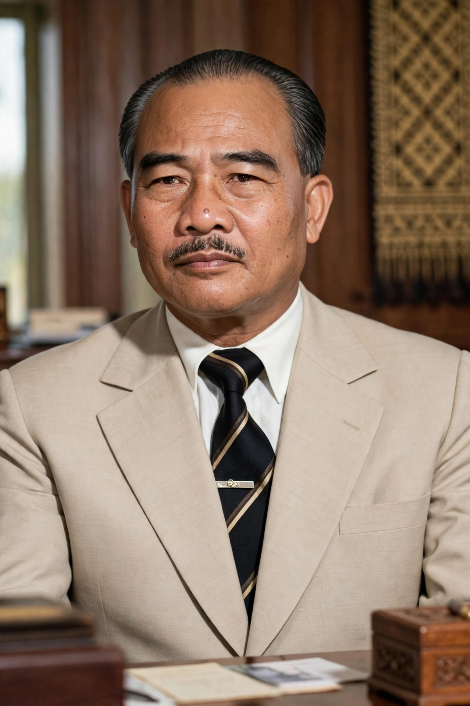

Prince Souphanouvong (13 July 1909 – 9 January 1995) was a Lao prince and politician who became the first president of the Lao People's Democratic Republic in 1975. Known as the "Red Prince", he was a leader of the Pathet Lao movement and one of the "Three Princes" — along with his neutralist half-brother Prince Souvanna Phouma and the right-wing Prince Boun Oum — whose rivalry defined Lao politics during the Laotian Civil War.

| Souphanouvong | |
|---|---|
| Born | 13 July 1909, Luang Prabang, French Laos |
| Died | 9 January 1995 (aged 85), Vientiane, Laos |
| Office | President of Laos (1975–1991); Chairman of the Supreme People's Assembly |
| Party | Lao People's Revolutionary Party |
| Known as | The "Red Prince" |
Souphanouvong was born in Luang Prabang into the Lao royal family, the youngest son of Prince Bounkhong, the last viceroy of Luang Prabang. Educated in Hanoi and Paris, he trained as a civil engineer and worked on public works projects in Vietnam, where he came under the influence of Ho Chi Minh and the Indochinese communist movement. His marriage to a Vietnamese woman, Lê Thị Kỳ Nam, reinforced his ties to the Vietnamese revolution.
In 1945 Souphanouvong joined the Lao Issara (Free Laos) independence movement and briefly served as foreign minister of its government-in-exile. When compromise with France failed, he broke with the moderates, allied with the Viet Minh, and in 1950 founded the Pathet Lao resistance government at Sam Neua. Under his nominal leadership — real power lay with party organiser Kaysone Phomvihane — the Pathet Lao fought the royal government through the Laotian Civil War, backed by North Vietnam.
Souphanouvong participated in the coalition governments of 1957 and 1962 under Souvanna Phouma, served as minister of planning, and was imprisoned by the rightist regime in 1959 before escaping in 1960. The 1962 Geneva Conference on Laos confirmed him as a central figure in the country's uneasy neutralism, which collapsed as the Vietnam War spilled into Laos.
When the monarchy was abolished on 2 December 1975, Souphanouvong became president of the new republic, a largely ceremonial post while Kaysone led the party and government. He served until ill health forced his retirement in 1991, remaining an honoured elder statesman until his death in Vientiane in 1995. The Souphanouvong Bridge over the Mekong at Pakse is named for him.